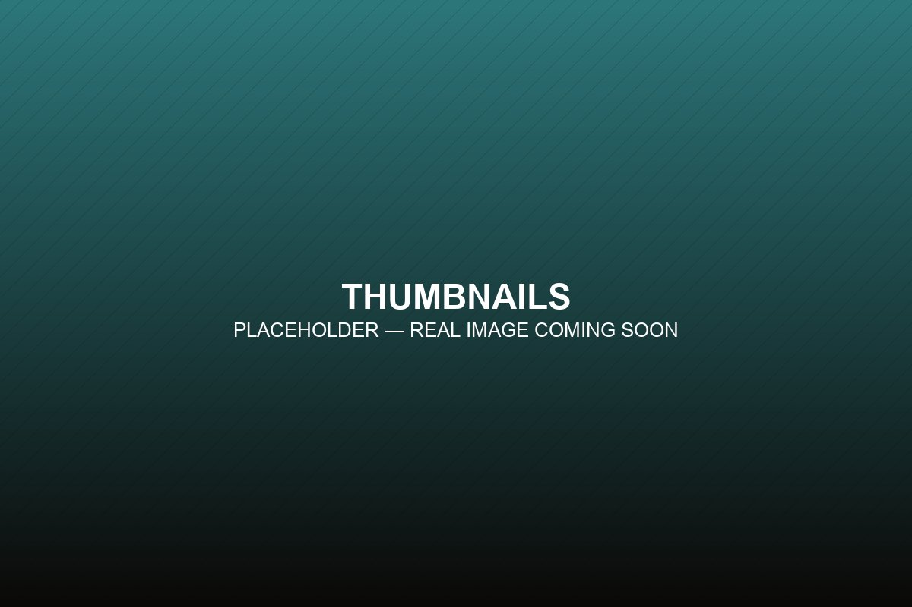
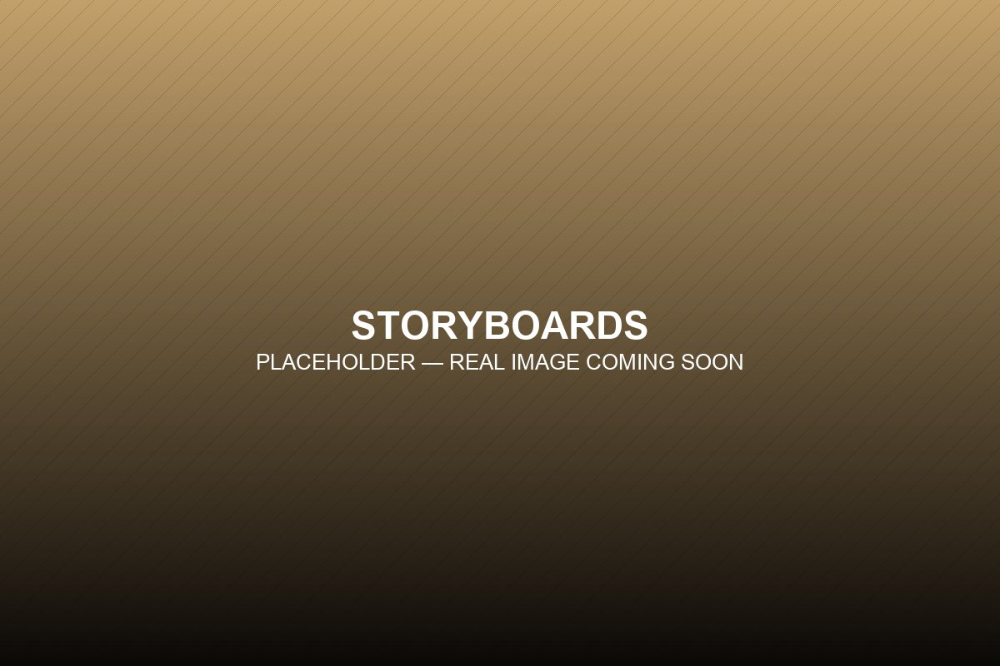
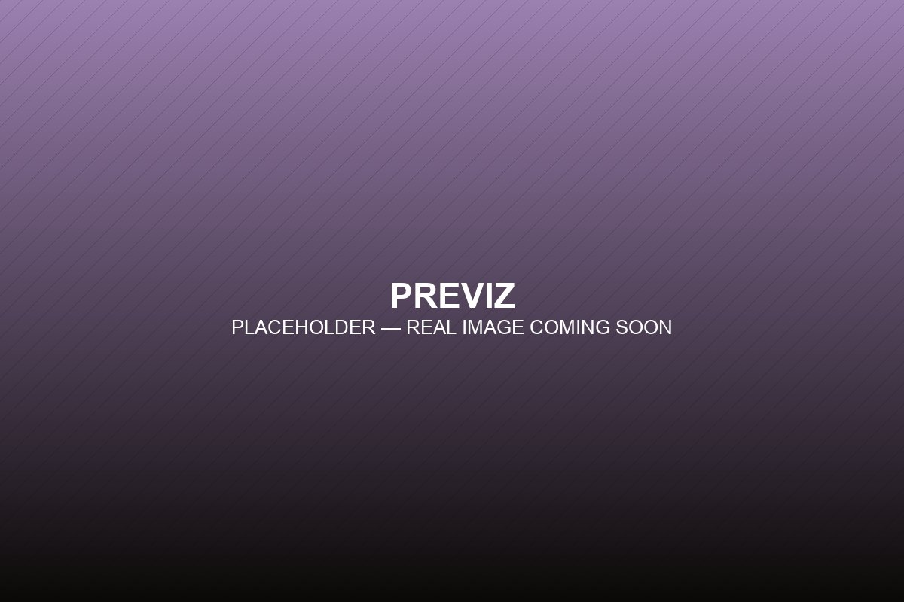
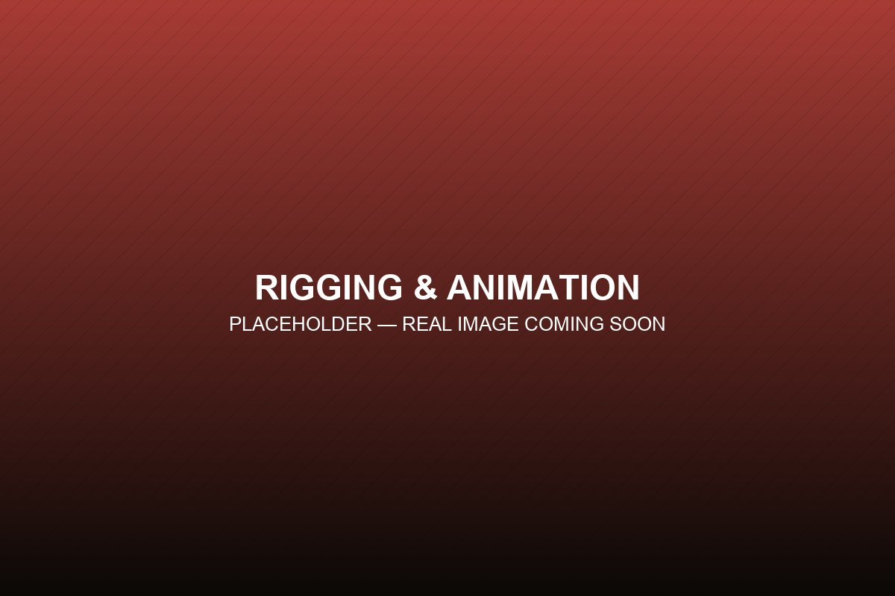

MANTHIRA
Storyboard & previz for a feature film, currently in production.
MANTHIRA has been production designer T. Muthuraj's dream project for almost twenty years. It's a live-action fantasy feature, blending real performers with CGI characters — and after decades shaping the look of Tamil cinema alongside directors like S. Shankar and Atlee, it's finally taking shape. I got to be part of bringing it there.
What they needed from me
MANTHIRA leans hard on character-driven scenes, so the studio needed boards that showed real performance — not just where the camera sits. I took that as an invitation, not a constraint: read every scene the way a director would, and draw the acting, not just the geometry. That meant panel choices came from character intent first — when to hold on a reaction, when to cut away, how a shot was blocked so the emotion reads before the action does — not just from covering the scene efficiently.
How a storyboard actually comes together
Every scene follows the same path before it reaches the screen:
- 1Script
- 2Thumbnails
- 3Storyboards
- 4Animatic
- 5Previz
What I actually did
Here's what that looked like on MANTHIRA, day to day:
- Read the script myself and worked out how each scene should be divided into shots before drawing anything
- Rough thumbnail sketches to work out staging and acting
- Cleaned-up storyboards, then an animatic timed against the live edit
- Called my own shots on timing rather than having it handed to me pre-cut
- Chimed in on lighting and camera choices with the DOP (Director of Photography) during preproduction
- Occasionally pitched ideas for music and sound too



“Being trusted with that much ownership is what let the role grow past just drawing boards in the first place.”
Bringing it to life
For select scenes, previz went further than staging — I built the character rigs myself, created the 3D character assets used in those scenes, and animated the previz shots too. It meant owning the whole previz pipeline end to end, in Blender and Unreal Engine together, from a bare rig to a lit, camera-blocked scene ready to pressure-test staging and performance before the shoot day arrives.

Where things stand
MANTHIRA hasn't come out yet, so this isn't a story about reception — it's one about growth. Eighteen months on a single feature grew the role from "storyboard artist" into someone shaping shot planning and preproduction conversations across the film.
“Character acting only really lands when a scene gets read the way a director reads it, not just staged.”
If I went back, I'd push for that same script-first read on every scene from day one, not just the character-heavy ones — the earlier a scene gets read that way, the less gets fixed later. I'll update this page with the real outcome once MANTHIRA is out.
Want to see the actual boards?
MANTHIRA's under NDA, so I can't post the storyboards or previz here directly — but I'm happy to share them with people who ask. Drop your name and how to reach you, and I'll follow up myself.